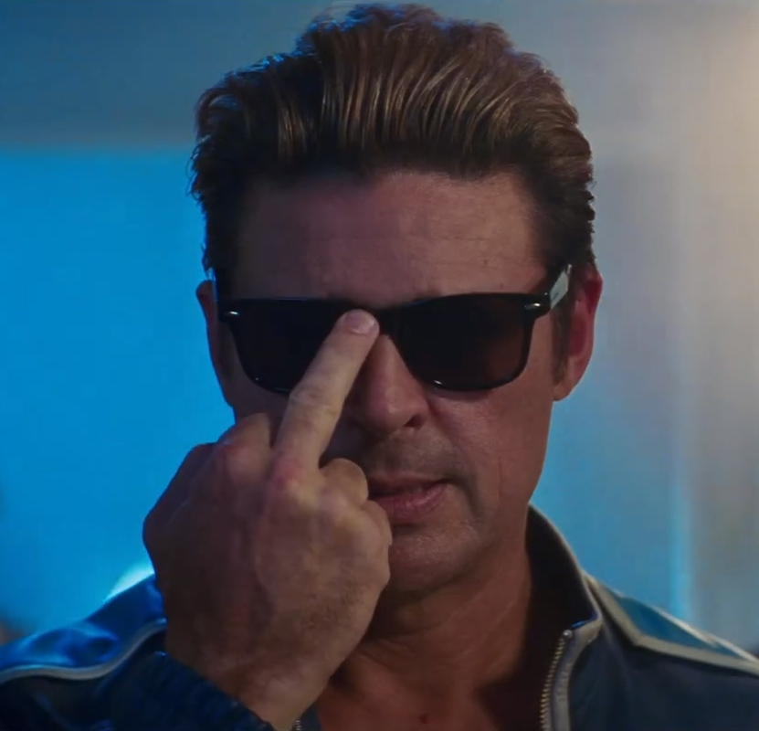

Johnny Cage
Джонни Кейдж (Johnny Cage) — голливудская кинозвезда и знаменитый боец-самоучка. В Mortal Kombat X он продолжает сниматься в кино, но встаёт на защиту Земного Царства, а в сериале Kombat Kids обучает своё искусство дочери Кэсси.
🎬 Фирменные Вариации (MK XL)
В Mortal Kombat XL Джонни Кейдж представлен несколькими стилями боя:
Список А (A-List): Усиленные комбо и усиление обычных атак, агрессивный
прессинг.
Каскадёр (Stunt Double): Тень-каскадёр поддерживает в комбо и открывает
противника для новых серий.
Кулаки (Fisticuffs): Упор на удары голыми руками — увеличенный урон и
пробивание защиты.